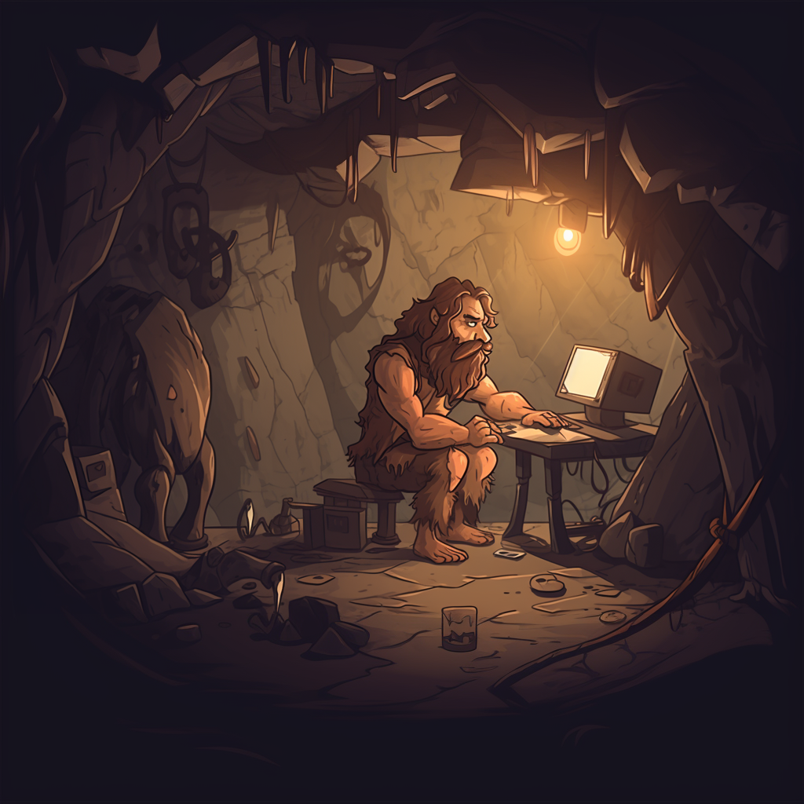

Códice
Como Arquiteto de Soluções e Segurança, busco neste local compartilhar assuntos de meu interesse pessoal - geralmente pouco ortodoxos -, embora veja potencial de guiar futuros aspirantes ou curiosos da área. Disponibilizado nos tópicos abaixo, e publicado em capítulos sem periodicidade regular - filho pequeno..., sabem como é - , o Códice é um antro de informação que responde perguntas a qual ninguém fez.
| Ægis | Singularᴉdade | Cachimônica | Apetrechos |
|---|---|---|---|
|  | |||
| Artigos e relatórios relacionados a testes de penetração, exploração de vulnerabilidades e assuntos com escopo em cibersegurança. | Artigos orientados a devaneios sobre assuntos diversos, cunhados à partir da observação do cotidiano analógico ou digital. | Artigos sobre a tempestade cerebral durante a concepção de uma linguagem de programação, cuja sintaxe rupestre e interiorana não possui fins acadêmicos. | Artigos sobre as ferramentas que encontro no caminho e que considero relevante para o trabalho. |